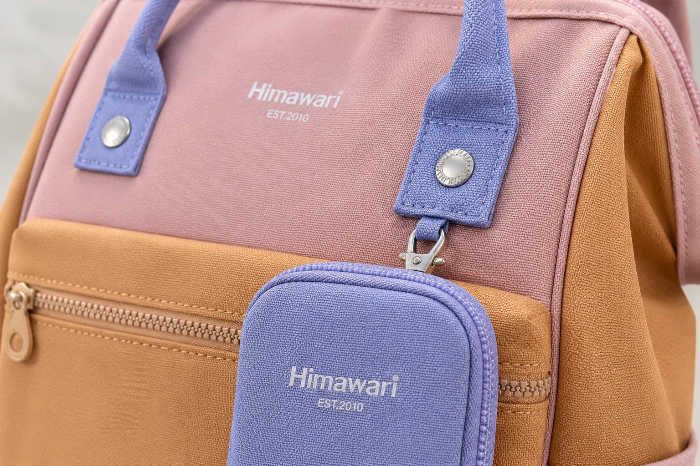
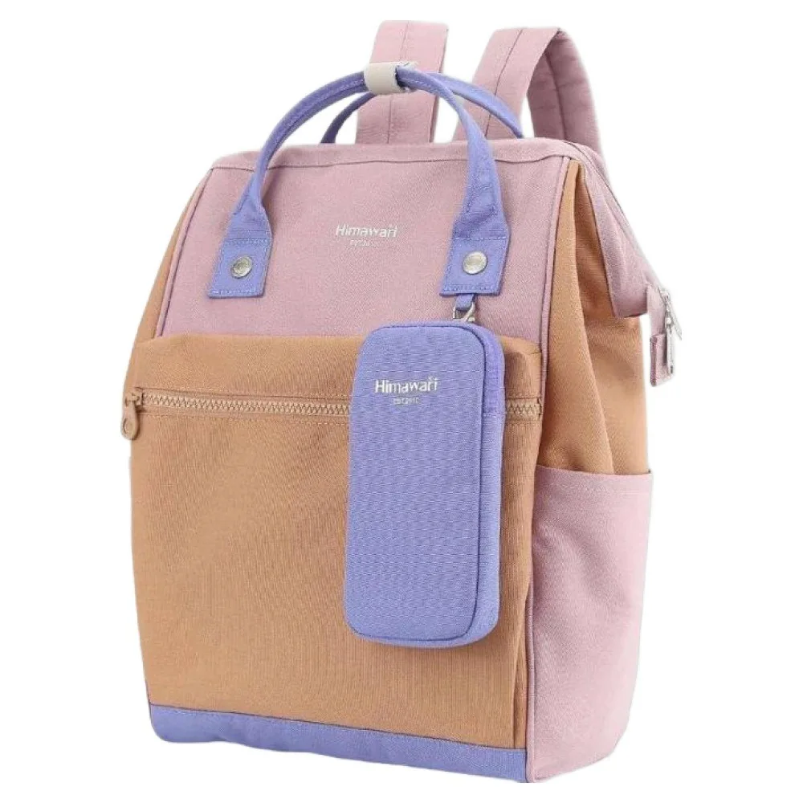

백팩 앞 파우치가 자꾸 돌아가면 어디부터 볼까
가방을 의자에 내려놓았을 때는 앞 파우치가 반듯했는데 다시 메고 보니 지퍼가 몸판 쪽을 향할 때가 있습니다. 손으로 바로잡는 건 어렵지 않습니다. 다만 다음에도 같은 방향으로 돌아간다면 가방을 내려놓고 손을 뗄 때와 다시 들어 올릴 때를 따로 살펴보세요. 앞면에 매달린 파우치는 가방이 움직일 때마다 같은 자세를 유지하지 않습니다. 어느 부위가 먼저 움직이는지 보면 연결부를 살펴야 할 때와 가방을 놓는 방향만 바꿔도 될 때를 구분할 수 있습니다.
No.1027 피치핑크의 실제 제품 사진에는 보랏빛 손잡이 받침 아래로 작은 금속 연결부와 같은 색 파우치가 보입니다. 파우치는 황갈색 앞 포켓 위로 내려와 포켓을 가로지르는 지퍼와 일부 겹쳐 보입니다. 사진에서는 이 위치까지 확인할 수 있습니다. 연결부가 어느 각도까지 돌아가는지나 어떤 무게까지 걸 수 있는지는 알기 어렵습니다. 외부 치수 28×40×17cm 역시 백팩의 사양이며 앞에 매단 파우치의 크기나 하중을 뜻하지 않습니다.
내려놓았을 때 파우치가 어떻게 누워 있나
먼저 가방을 평평한 곳에 세우고 파우치 안의 물건을 뺍니다. 파우치의 어느 면이 저절로 앞으로 오는지 봅니다. 금속 연결부가 자연스럽게 움직이는 범위 안에서 파우치를 앞으로 살짝 들어 올렸다가 손을 뗍니다. 앞 포켓의 돌출된 부분에 파우치 한쪽이 걸치면 비스듬히 놓일 수 있습니다. 파우치가 비스듬히 매달렸다면 몸판에 닿은 면을 살짝 들어 보세요. 파우치가 다시 편평하게 내려오면 연결부가 꼬였는지 보기 전에 두 물건이 서로 닿았는지부터 확인할 수 있습니다.
손을 뗀 뒤에도 파우치가 같은 각도에서 멈추면 바로 금속 부분을 잡아 돌리지 않습니다. 천 고리가 한쪽으로 접혀 있는지, 안쪽 물건 탓에 파우치 외형이 불룩했는지부터 확인합니다. 비워 놓은 파우치와 평소 쓰던 상태를 비교할 때도 같은 자리에 가방을 둬야 차이를 알아보기 쉽습니다. 가방을 기울였을 때만 방향이 바뀐다면 그 변화도 별도로 적어 둘 만합니다. 이렇게 살펴볼 수 있는 건 부품이 저절로 움직이는 모습입니다. 힘을 줬을 때 어디까지 움직이는지는 이 동작으로 알 수 없습니다.

앞 포켓을 여는 손의 경로를 따라가 보기
사진 속 No.1027에서는 파우치 연결점이 앞 포켓 지퍼보다 위에 있습니다. 아래에서 손을 올려 지퍼 손잡이를 잡아 보세요. 위에서 손을 내려 잡을 때는 손등이 닿는 위치가 달라질 수 있습니다. 지퍼 손잡이는 파우치 뒤에 가려지지 않았는데 손등만 파우치 밑면에 닿는다면 손잡이를 쥐려고 손을 깊이 넣다가 파우치에 닿았을 수 있습니다. 손가락 끝으로 지퍼 손잡이를 찾은 다음 다른 손으로 파우치를 가볍게 비켜 두고 열어 봅니다.
처음 몇 센티미터만 움직여도 손과 파우치가 어디서 닿는지 볼 수 있습니다. 포켓을 열면 파우치가 옆으로 밀릴 수 있습니다. 닫는 쪽에서도 손을 놓으면 파우치가 다시 지퍼 앞으로 내려올 수 있습니다. 여는 데 문제가 없어도 닫을 때 한 번 더 봅니다. 파우치에 연결된 고리나 끈을 앞 포켓의 지퍼 손잡이처럼 잡아당기면 힘이 걸리는 곳이 달라집니다. 여닫을 때는 해당 지퍼에 달린 손잡이를 사용합니다.
자리에 앉기 전과 가방을 다시 들 때
가방을 평소처럼 잡아 들어 올리면 바닥이 먼저 떨어지며 앞면의 기울기가 달라집니다. 이때 파우치가 잠깐 몸판에서 멀어지거나 앞으로 돌아올 수 있습니다. 비운 가방을 들어 볼 때는 고리가 가방 쪽에서 움직이는지, 아래쪽에서 파우치가 다른 면에 부딪히는지 봅니다. 가방을 의자 끝에 둔 채 몸 쪽으로 끌어당기는 동작에서는 파우치가 의자의 팔걸이나 테이블 모서리에 먼저 닿는지도 살핍니다. 가방을 흔들거나 고리를 당길 필요는 없습니다. 평소 쓰는 동작을 느리게 한 번 해 보는 정도면 됩니다.
특히 앞면을 벽이나 다른 짐 쪽에 밀어 넣을 때 파우치가 뒤집혔다면 매달린 부분을 짐 사이에 넣지 않는 방향으로 가방을 돌려 놓아 보세요. 같은 자리에서 앞면을 마주 보게 뒀을 때는 손이 바로 닿습니다. 앞면이 안쪽을 향하면 가방을 꺼낼 때도 파우치의 이동을 보기 어렵습니다. 파우치를 자주 쓴다면 앞면을 비워 둘 자리가 있는지도 살펴보세요. 어느 상황에서 파우치가 방해되는지 알아보기 쉽습니다.

고리를 손보기 전에 남길 사진
텅 빈 파우치가 자연스럽게 움직여도 연결부 주변에 실이 튀어나오거나 천이 벌어지는 변화가 보일 수 있습니다. 이럴 때는 파우치에 힘을 주지 않고 평평한 곳에 가방을 둔 뒤 전면과 연결점 주변을 찍습니다. 앞 포켓을 닫았을 때와 평소 물건을 꺼내는 각도에서 보이는 변화가 서로 다르면 그 차이도 알려 주세요. 언제부터 그랬는지, 가방을 내려놓을 때인지 들 때인지 함께 적으면 보이는 증상을 설명하기 쉽습니다.
다른 연결 부품을 사서 달 생각이라면 먼저 제품 안내에서 지금 가방의 연결 방식을 확인합니다. 사진만으로 호환되는 고리 규격을 정하기는 어렵습니다. 겉모양이 비슷한 부품도 연결되는 방향이나 가방에 닿는 모양이 달라질 수 있습니다. 가방을 세워 둔 사진에선 보이지 않던 문제가 포켓을 여닫을 때만 드러날 수 있습니다. 평소처럼 가방을 내려놓은 뒤 앞 포켓을 한 번 열어 봅니다. 마지막으로 손잡이를 잡아 일어나 보면 어느 동작에서 파우치가 다시 돌아갔는지 좁힐 수 있습니다.